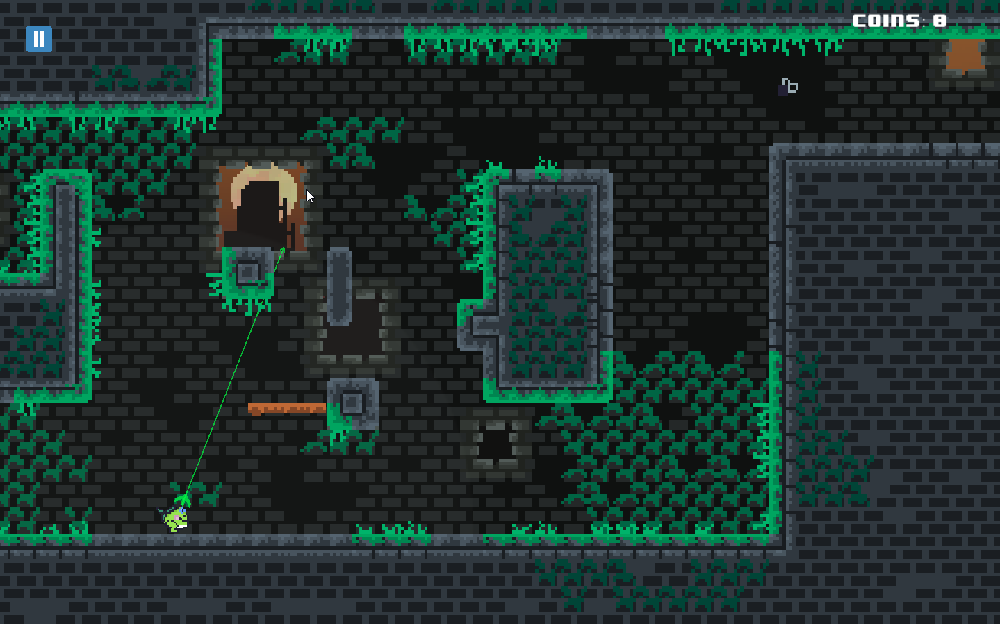

"Este aqui foi uma surpresa: Ploct é um jogo de plataforma em 2D desenvolvido por alunos do Senac. Os gráficos são simples, mas a dinâmica do jogo te desafia: você é um sapinho que precisa pular e grudar a língua pelas paredes para se deslocar e coletar as moedas ao longo do cenário.
Parece simples, não é? Mas a verdadeira graça de Ploct é avançar nos cenários, pulando sem cair nos precipícios: o sapinho não consegue grudar a língua em áreas que não forem verdes, e coordenar saltos e cliques precisos de maneira rápida vai exigir nervos de aço — lembrando muito o famoso indie de plataforma, Celeste.

Uma demo de Ploct está disponível para baixar no itch.io."
(Matéria disponível em: https://www.uol.com.br/tilt/noticias/redacao/2022/10/08/bgs-2022-7-indies-brasileiros-que-voce-nao-pode-deixar-de-testar.htm)